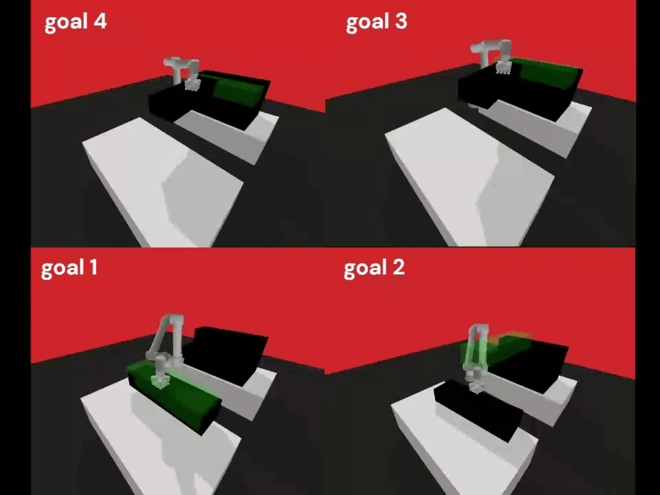
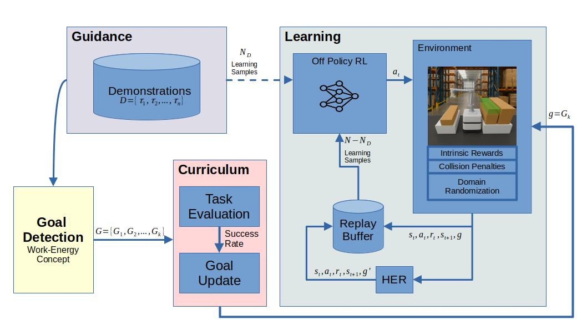

REINFORCEMENT LEARNING
ELPaR
Goal-conditioned reinforcement learning for palletizing large objects in constrained spaces, with demonstration-based curriculum learning and zero-shot sim-to-real transfer.

Overview
This work addresses the challenges of autonomous palletization and object retrieval involving large, heavy boxes such as furniture items, rifle cases, or automotive parts using Reinforcement Learning (RL). Existing robotic palletization systems often fail to integrate high-level planning with physically feasible, collision-free manipulation, particularly in constrained and cluttered environments. Baseline RL policies cannot learn the task due to the availability of only sparse rewards from the environment, while penalties from collisions or stack destabilization dominate and degrade learning signals. We propose ELPaR (Experience Learning with Progressive Demonstrations and Reflection), a reinforcement learning framework that enhances training efficiency and deployment robustness through an energy-driven automatic curriculum integrated with off-policy learning, intrinsic rewards, and demonstrations. Unlike prior auto-curriculum approaches that increase difficulty by resetting the agent to temporally sampled demonstration states while keeping the goal fixed, ELPaR maintains a consistent initial state distribution and instead progressively advances the desired goal. These intermediate goals are automatically extracted from a single successful demonstration using the work–energy principle, yielding a physically grounded and interpretable decomposition of the task into manipulation stages such as lifting, reorientation, stabilizing and placement. ELPaR employs task-aware, goal-conditioned learning, where desired object poses generated by a palletization planner guide policy optimization. The method is tailored for suction-based manipulation, which is inherently sensitive to moments about axes perpendicular to the suction surface. ELPaR leverages contact feedback, force–torque sensing, and suction pressure measurements to learn stable, collision-free behaviors. In both simulation and real-robot experiments, ELPaR demonstrates comparable or faster convergence than competing baselines while achieving higher palletization success rates with significantly fewer collisions and robust zero-shot sim-to-real transfer without fine-tuning. Through domain randomization, the learned policy generalizes across object sizes and masses, enabling safe and efficient palletization in compact warehouse environments.
Framework
